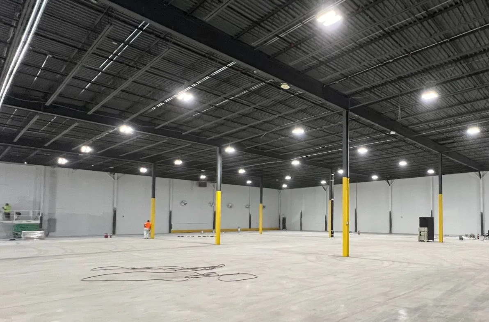
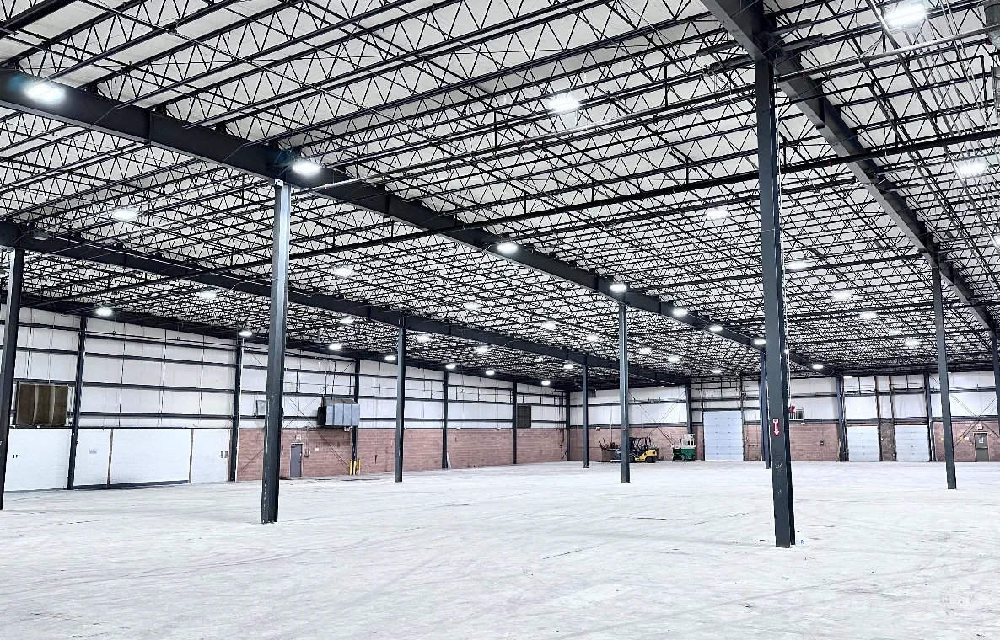
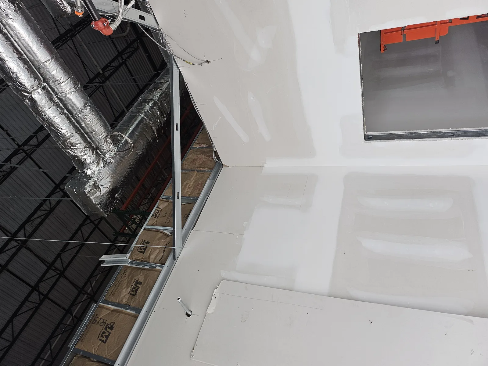
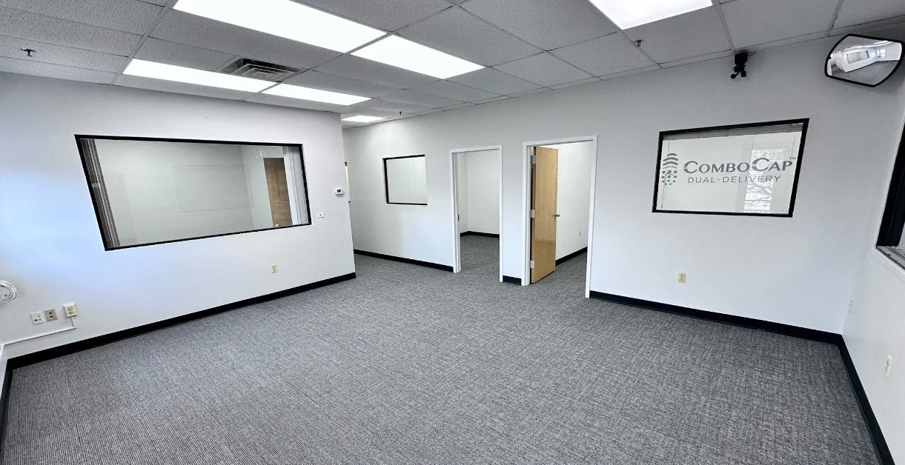
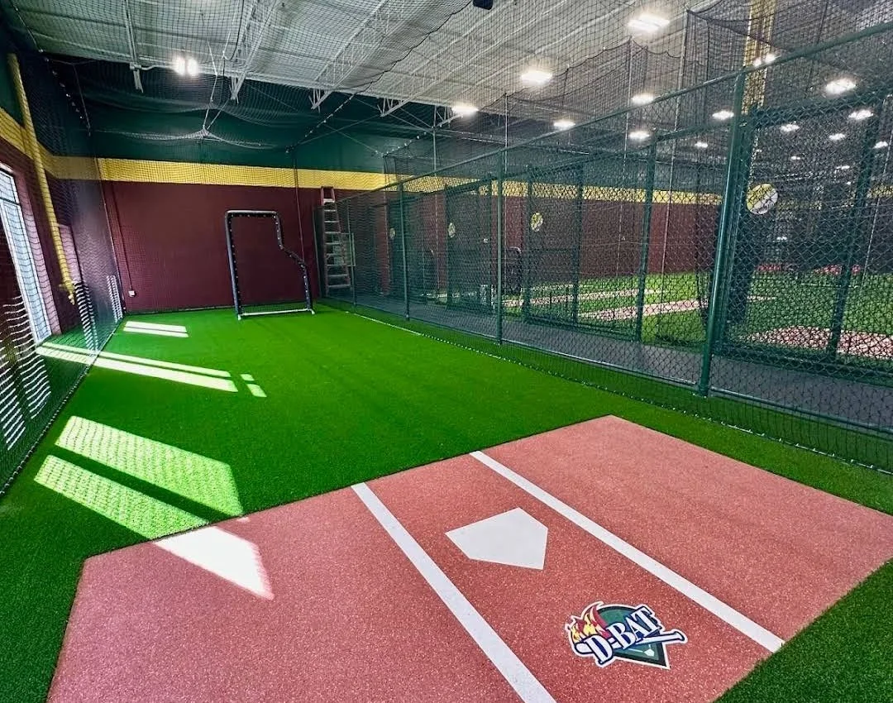
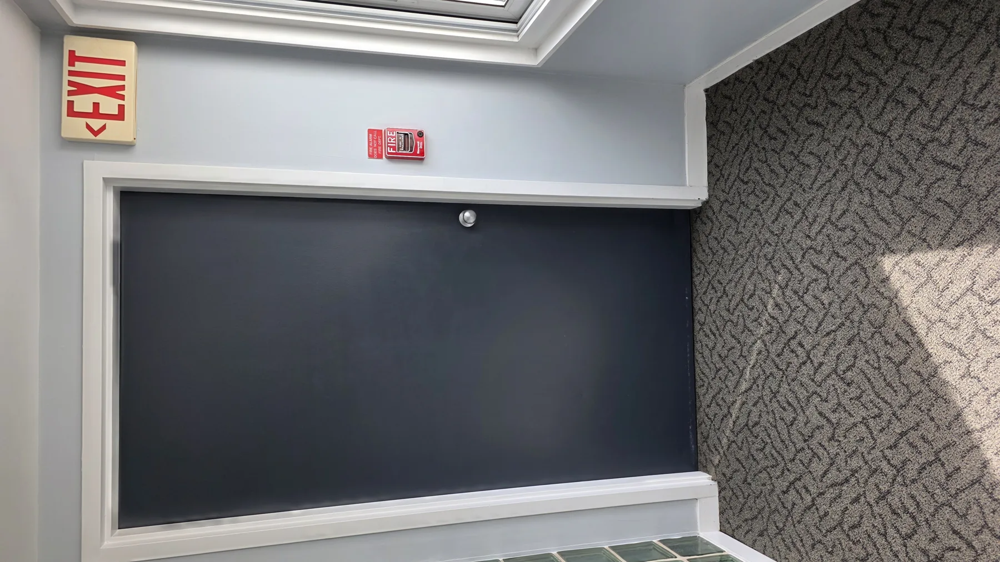
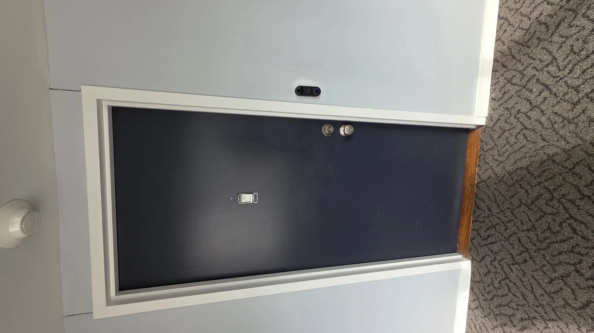
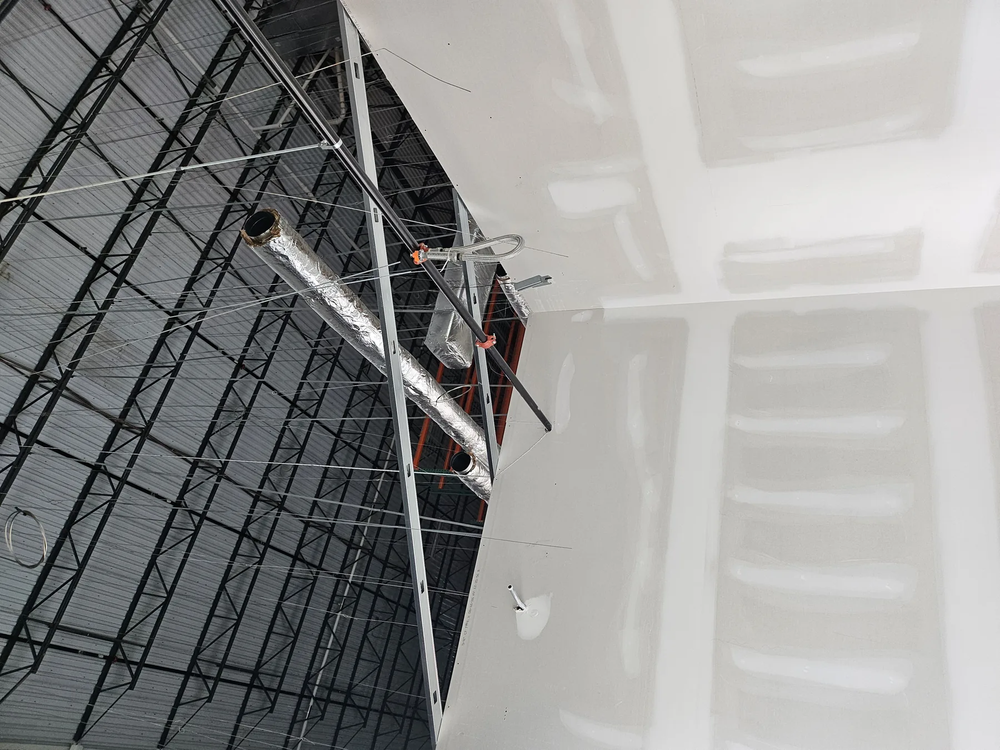
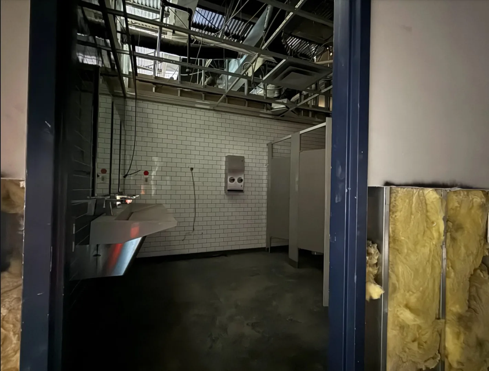

2000 Bishops Gate / Concrete
Slab work & pour-back coordination
Documented work includes sawcutting, slab inspection coordination, and concrete pour-back execution.
Selected documented GMT work across commercial, industrial, specialty, hospitality, concrete, demolition, and multi-location environments.

Documented demolition planning includes large concrete and metal mezzanine removal, selected office and bathroom demolition, and repair coordination below removed areas.

Field coordination includes framing and backing corrections, drywall sequencing, doors and hardware, ceiling-related coordination, and closeout under an active schedule.

Documented work includes sawcutting, slab inspection coordination, and concrete pour-back execution.

Demolition, field-condition documentation, change-order coordination, door-related review, and follow-on interior work.

Documented work includes Frederick and Glen Burnie, Maryland, with additional D-BAT experience reflected in GMT corporate materials.
Structural footing scope includes excavation, compaction/testing, forming, reinforcing steel, inspections, concrete placement, and leveling-plate coordination.
Active coordination includes permitting, demolition safe-off, trade sequencing, proposal revisions, and field mobilization.
Hallway and common-area work coordinated across carpentry, electrical, flooring, lighting, hardware, doors, finishes, and roof-deck scopes.
Project names and descriptions shown here are limited to information supported by current GMT project correspondence, connected Drive material, and approved corporate materials. Delivery role and scope vary by project. Photography is representative unless a project is specifically identified in the image caption.



